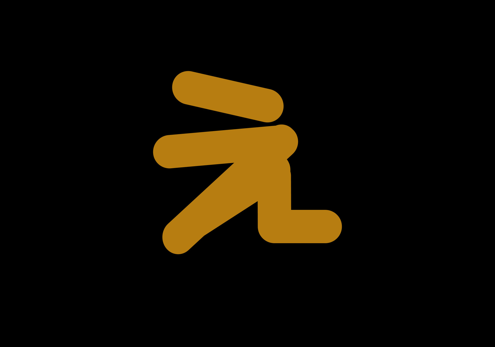

Case Study: Designing & Developing My Personal Portfolio Website
Project Overview
As a UI/UX designer and front-end developer, my portfolio website is more than just a showcase—it's a reflection of my skills, design philosophy, and brand identity. The goal was to create an engaging, visually appealing, and functional website that highlights both my design expertise and coding capabilities.
The Two-Phase Approach
To cater to different audiences, I structured the website in two phases:
-
Phase One: A concise, skimmable experience tailored for hiring managers and recruiters who want a quick overview.
-
Phase Two: A deeper dive with detailed case studies, offering insights into my design process, problem-solving approach, and technical implementation.
One of the unique aspects of this project was designing a personalized logo that represents my identity. Inspired by the Japanese symbol "え" (E) - the Hiragana which not only represents the first letter of my name (Enam) but also embodies a sense of flow, elegance, and simplicity that aligns with my design philosophy. I crafted a minimal yet meaningful logo that ties my brand together.
This case study walks through my design thinking, UI/UX decisions, logo creation, and front-end implementation to build a compelling personal portfolio website.
Understanding the Goals & Challenges
Project Goals
My portfolio website needed to achieve several key objectives:
-
Clear & Engaging UI – A clean and modern design that reflects my UI/UX expertise.
- Concise Yet Impactful – Phase One should provide quick access to essential information.
- Detailed Case Studies – Phase Two should give an in-depth look at my projects.
- Strong Personal Branding – A unique identity through a custom-designed logo and color palette.
- Performance & Responsiveness – Fast-loading pages, smooth animations, and accessibility across devices.
Challenges & Considerations
-
Balancing Simplicity with Depth – How do I keep Phase One minimal while still engaging?
- Creating a Unique, Meaningful Logo – The logo should be simple yet tied to my identity.
- Optimizing for Performance – Ensuring smooth microinteractions without slowing down the site.
- Ensuring a Cohesive UI/UX Flow – The navigation between Phase One and Phase Two should feel seamless.
UI/UX Design Process
User Research & Competitive Analysis
Before jumping into the design, I analyzed other UI/UX designer portfolios to identify key trends:
- Clear navigation – Simple menus and easy-to-scan sections.
- Visual hierarchy – Highlighting key skills and projects without overwhelming users.
- Subtle microinteractions – Enhancing engagement without distracting from the content.
- Dark Mode & Accessibility – More inclusive design choices.
Wireframing & Layout Design
Using Figma, I created low-fidelity wireframes to outline the structure of the website for desktop and mobile view. Once the wireframes were finalized, I moved on to high-fidelity mockups, incorporating typography, colors, and visual details.
Color Palette & Branding
For my branding, I chose a black, white, and gold color scheme. Black & White – Minimal, modern, and professional.
Gold Accents – A symbol of creativity, refinement, and personal touch.
The Logo Design Process
Concept & Inspiration
I wanted a minimalist logo that symbolized my personal identity. Inspired by the Japanese symbol "E" (え) and my name's first letter (E for Enam), I developed a custom typographic mark that represents:
- Simplicity & elegance in UI/UX.
- Cultural inspiration blended with modernity.
- Geometric precision for a professional look.
Logo Design


- Inspiration – The character え served as the foundation of my design. Its smooth, curved strokes naturally conveyed a sense of movement and modern aesthetics.
- Balanced geometric shapes for clarity and symmetry.
- A monochrome base with gold highlights to maintain brand consistency.
- Versatile applications for dark and light backgrounds.
- Abstract Refinement – I explored typographic modifications, merging the essence of え with a sleek, geometric look for better scalability and versatility.
Front-End Development & Implementation
Tech Stack & Tools
To bring my design to life, I used:
- HTML5, CSS3, JavaScript – The core front-end technologies.
- CSS Grid & Flexbox – For flexible, responsive layouts.
- Lazy Loading & Performance Optimizations – Ensuring a fast experience.
Microinteractions & Animations
- Hover effects on buttons and cards for subtle feedback..
- Smooth scrolling & page transitions for a polished flow.
- Dark Mode Toggle – Allowing users to switch themes seamlessly.
In designing my portfolio website, one of the key UI elements I implemented was the hamburger button for mobile view—a widely recognized icon used for navigation. My decision to use this element was driven by both usability and aesthetic considerations.
Phase Two: Expanding the Experience
Since Phase One is designed for quick browsing, Phase Two serves as a deep-dive section where I:
- Showcase detailed case studies of each project.
- Break down design challenges, iterations, and solutions.
- Highlight technical implementation and development insights.
- Provide interactive elements like prototype demos and code snippets.
To ensure smooth navigation, I added a "Explore More" text in Phase One, leading to Phase Two.
Challenges & Lessons Learned
Challenges Overcome
- Finding the right balance between minimalism and depth.
- Creating smooth animations without affecting page load times.
- Ensuring my branding (logo, colors, typography) feels cohesive across the site.
Key Takeaways
- First impressions matter – Keeping Phase One skimmable helps attract recruiters.
- Microinteractions make a difference – Small animations create a polished experience.
- Brand identity is powerful – A well-thought-out logo and color scheme strengthen my portfolio’s uniqueness.
Final Thoughts & Next Steps
Creating my portfolio was an exciting challenge that pushed me to refine my design, branding, and development skills. The two-phase approach ensures that my portfolio is both quick to browse yet rich in content.
Below is an overview of the final design, summarizing the key screens and interactions:
Future Improvements:
- Add an interactive blog section to share UI/UX insights.
- Experiment with AI-powered personalization.
- Optimize performance to ensure smooth loading and interaction speeds
- Gather user feedback and refine the UI based on usability insights.
- Enhance microinteractions to create a more engaging experience.
This portfolio is a living project, and I look forward to iterating and improving it over time!üòäüöÄ
Check it out.